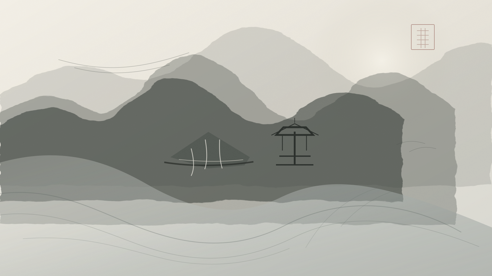
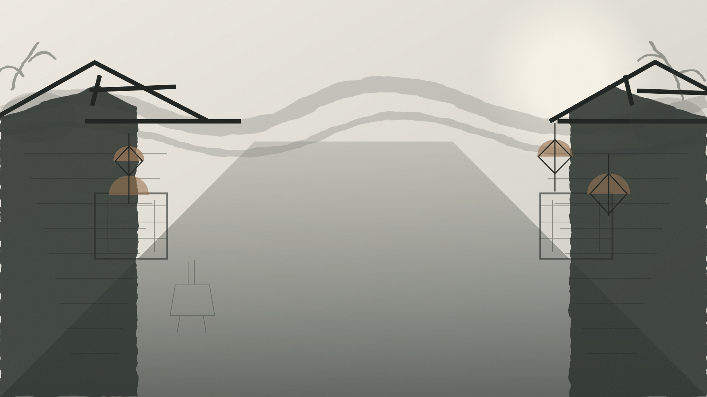
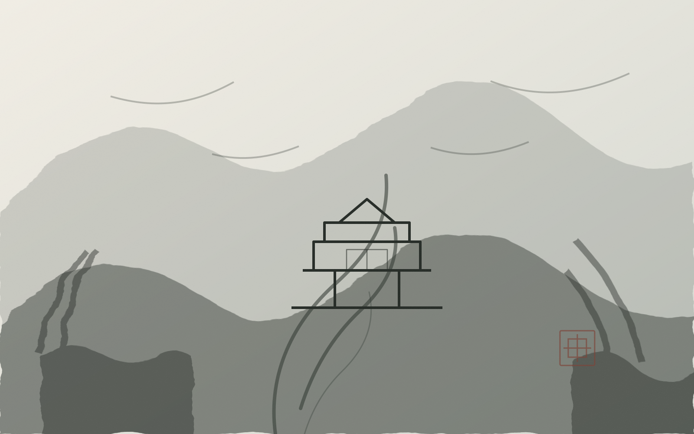

01 / DUJIANGYAN
都江堰
成都西北 · 岷江之上
李冰父子以鱼嘴、飞沙堰、宝瓶口三处巧思，驯服岷江两千余年。江水在此分流，成都平原自此沃野千里。站在安澜索桥上，听得见水的脉搏，也看得见古人治水的远见。
加入两日路线LANDSCAPE · 山水与街巷
离开人潮，向山水深处去。古堰分江、青城入云、竹影含露、巷陌藏茶，成都的辽阔与细微，都在一步一景之间。
FOUR SCENES · 四境
从都江堰的浩荡到宽窄巷子的细碎，从熊猫基地的憨态到青城山的清幽，四境各有声色，也共同写成了成都的从容。

成都西北 · 岷江之上
李冰父子以鱼嘴、飞沙堰、宝瓶口三处巧思，驯服岷江两千余年。江水在此分流，成都平原自此沃野千里。站在安澜索桥上，听得见水的脉搏，也看得见古人治水的远见。
加入两日路线
成都青羊 · 少城片区
宽巷子不宽，窄巷子不窄。青砖院墙、木格花窗与街角茶铺，把旧成都的生活节奏留在原地。傍晚灯起，寻一处院子听一段清音，便懂了何为“成都的闲”。
读一段茶馆文化成都北郊 · 斧头山
清晨是探访熊猫最好的时辰。竹林还带着露水，团子们已在木架上翻滚、啃竹、打盹。这里既是全球重要的大熊猫迁地保护基地，也是成都最柔软的一张城市名片。
查看出行贴士
成都都江堰 · 青城山镇
“青城天下幽”，幽在古木，也幽在人心。拾级而上，道观隐于林间，云雾绕过檐角，脚步自然放慢。前山寻道，后山看水，各得一段清凉与安静。
加入三日路线“拜水都江堰，问道青城山。”